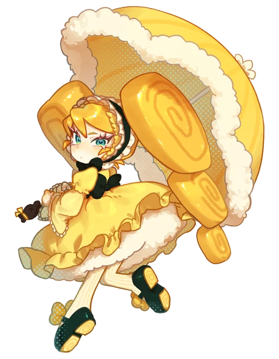
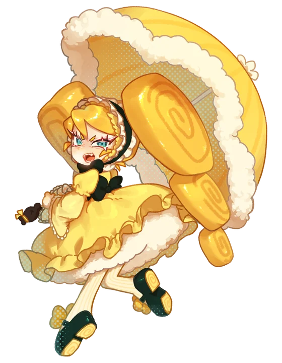
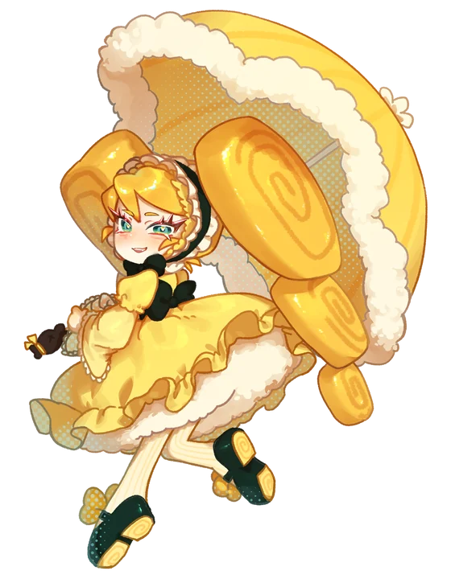
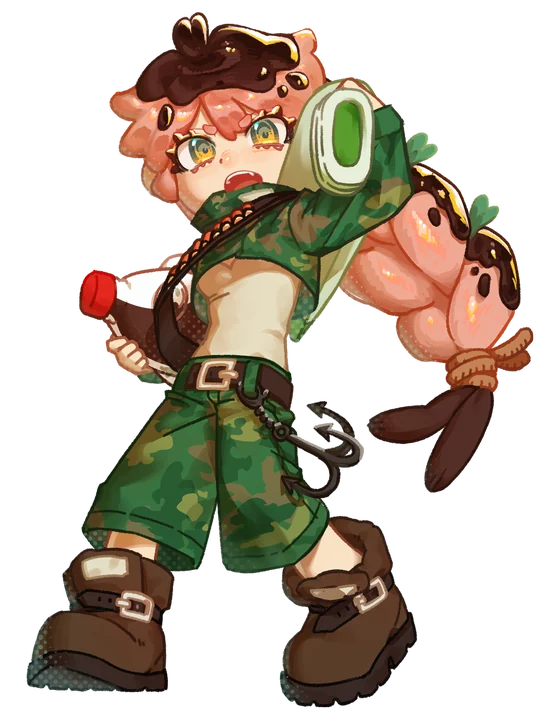
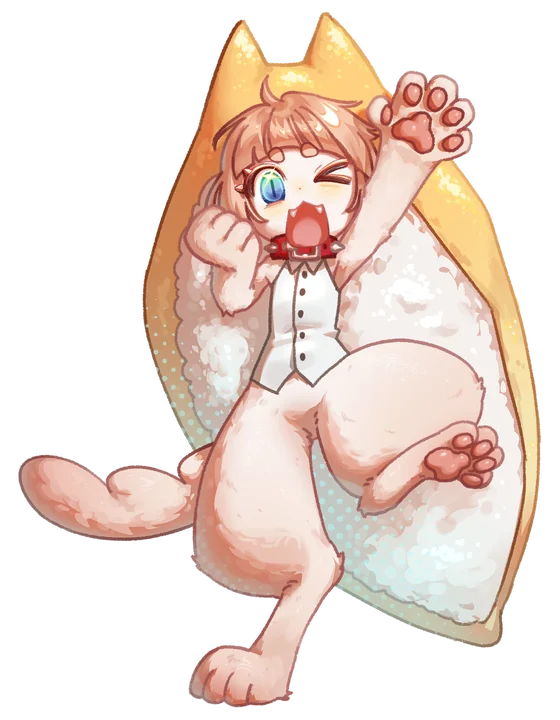

FEATURE 01
자동 공격 + 위치 선정
한 판은 약 5~7분. 이동만 하면 무기는 알아서 공격합니다. 적을 피하고 모으는 위치 선정이 승부를 가릅니다.
// END OF FEATURE
FEATURE 02
레벨업 3택 1
레벨이 오를 때마다 증강과 무기 강화 중 하나를 고릅니다. 같은 캐릭터도 선택에 따라 전혀 다른 판이 됩니다.
// END OF FEATURE

FEATURE 03
무기가 변한다
아델린의 양산은 3레벨에 몸 주위를 도는 회전 우산으로, 카마리온의 소총은 샷건으로 바뀝니다.
// END OF FEATURE
FEATURE 04
와사비 알현 — 가위바위보 도박
레벨업 카드를 포기하고 왕과 가위바위보를 하세요. 이기면 와사비의 힘으로 더 강력한 무기를 얻을 수 있습니다.
// END OF FEATURE

FEATURE 05
초밥 펫 9종
참치, 연어, 광어, 문어, 장어… 펫마다 사거리·연사·관통이 달라서 어떤 펫을 데려가느냐가 달라집니다. 최대 2마리까지 함께합니다.
// END OF FEATURE

FEATURE 06
보스전
5분에 나타나는 롤 법사는 체력이 줄 때마다 부하를 소환하고 돌진해 옵니다.
// END OF FEATURE
캐릭터

스크린샷
실행 방법
- 1다운로드
위의 버튼으로 zip 파일을 받습니다.
- 2압축 풀기
원하는 폴더에 모두 풀어 주세요. 압축을 풀지 않고 zip 안에서 실행하면 동작하지 않습니다.
- 3실행
WasabiSurvival.exe를 더블클릭합니다.
Windows가 "PC를 보호했습니다"라고 알려 주나요? 개인이 만든 앱이라 인증서 서명이 없어서 나오는 안내입니다. 추가 정보 → 실행을 누르면 실행됩니다.
조작
- 이동
- WASD 또는 게임패드 왼쪽 스틱
- 공격
- 자동
- 선택
- 마우스 클릭
사양
- 운영체제
- Windows 10 / 11 (64비트)
- 화면
- 1920×1080 전체 화면(창 모드 전환 가능)
- 용량
- 약 477MB